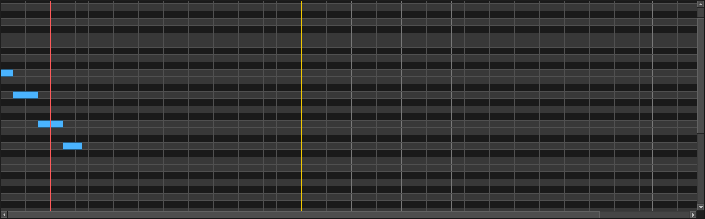

1. Create a track
Use + Track to add an instrument or sample track. Right-click a track to assign a bundled or third-party rack instrument.
Desktop MIDI + VST3 workstation
Build songs with a fast piano roll, bundled synths, per-track VST3 instruments, realtime playback, and AI-assisted composition in one desktop app.
mainv* tag/docsScreenshots



Guide
Use + Track to add an instrument or sample track. Right-click a track to assign a bundled or third-party rack instrument.
Choose the pencil tool, draw notes, and click existing notes to select, move, or resize them. Mouse wheel zoom works across editor views.
Set Instrument type to VSTI Rack, choose a supported VST3, and use Open VST GUI for the bundled synth editor.
Use the left and right locators to define the loop range, then hit Play. Synth playback stays realtime instead of going through temp WAV files.
Open the Mixer tab to adjust volume, pan, mute, solo, and insert VST FX. Track colors carry across the arranger and editors.
Export MIDI, render audio stems, or package the app using the release process below.
Release
powershell -ExecutionPolicy Bypass -File .\scripts\build_windows_release.ps1 -ReleaseVersion v0.1.0The script installs build dependencies, packages the desktop app with PyInstaller, and creates a portable ZIP containing AI Music Studio.exe.
git tag v0.1.0
git push origin main --tagsPushing a v* tag triggers the release workflow, which rebuilds the bundled VST3 instruments, packages the Windows app, and publishes the ZIP plus SHA256 checksum to GitHub Releases.
Notes
The shipping host path targets VST3. Unsupported plugins are filtered out of the rack UI so the playable list stays clean.
The portable build includes the bundled AI Bass Synth, AI Drum Machine, and AI String Synth VST3 instruments.
For setup details, packaging notes, and development guidance, check the README.